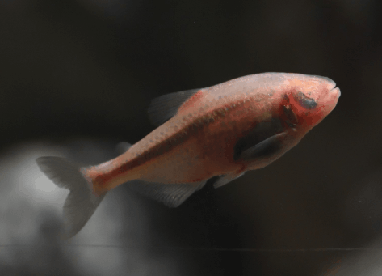

Systématique
- Ordre : Characiformes
- Famille : Characidae
- Genre : Astyanax
- Espèce : A. jordani
- Auteur : Hubbs & Innes, 1936

Astyanax jordani, célèbre sous l'appellation de Tétras aveugle, est une espèce troglobie (cavernicole) emblématique. Il s'agit d'une forme évoluée à partir d'ancêtres vivant en surface, ayant subi des adaptations drastiques à l'obscurité totale. Le corps est de couleur rose chair à blanc laiteux en raison d'une absence totale de pigmentation (albinisme naturel).
Le trait le plus distinctif est l'atrophie oculaire : chez l'adulte, les yeux sont absents ou recouverts par une membrane de peau. À la naissance, les alevins possèdent des yeux rudimentaires qui dégénèrent rapidement au cours de la croissance. Il mesure environ 8 à 10 cm à l'âge adulte. Son corps est fusiforme et robuste, typique des tétras.
Malgré sa cécité, Astyanax jordani est un nageur extrêmement agile et actif. Il utilise un système de ligne latérale hyper-développé pour percevoir les moindres vibrations et changements de pression dans l'eau, lui permettant d'éviter les obstacles et de chasser avec une précision remarquable. Son sens de l'odorat est également très affiné.
C'est un poisson grégaire qui doit être maintenu en groupe (minimum 6 individus). Son comportement peut parfois être nerveux, et il a tendance à mordiller les nageoires de ses colocataires s'il est maintenu dans un espace trop restreint ou avec des espèces trop calmes. Il ne nécessite aucun éclairage spécifique et peut même être stressé par une lumière trop vive, bien qu'il s'y accommode avec le temps.
Mode : Ovipare, diffuseur d'œufs en pleine eau.
La reproduction est relativement simple en aquarium et ne nécessite pas d'obscurité totale, bien que cela soit son milieu naturel. La parade nuptiale est énergique, le mâle poursuivant la femelle à travers le bac. Les œufs sont expulsés au hasard, souvent parmi des plantes à feuilles fines ou de la mousse.
Les parents n'apportent aucun soin et dévorent volontiers leur propre ponte. L'éclosion intervient après 24 à 48 heures. Les alevins sont d'abord nourris avec des infusoires, puis des nauplies d'artémias. Comme mentionné, les juvéniles naissent avec des yeux qui disparaissent progressivement.
Dimorphisme sexuel : Peu marqué. La femelle est généralement plus grande et présente un abdomen plus rebondi, surtout en période de frai. Le mâle est plus svelte et souvent légèrement plus petit.
Espérance de vie : 5 à 8 ans en aquarium dans des conditions de maintenance appropriées.
Cette espèce est endémique des réseaux de grottes calcaires du Mexique, notamment dans la région de San Luis Potosí (système de la Cueva Chica). L'eau y est d'une stabilité physico-chimique remarquable, avec une température constante.
L'habitat naturel est totalement dépourvu de flore aquatique en raison de l'absence de lumière. Le substrat est composé de roches, de sable et de limon. La nourriture naturelle provient principalement des déjections de chauves-souris (guano) et des micro-organismes ou insectes tombant accidentellement dans les eaux souterraines.
Répartition

Origine naturelle :
- Mexique : San Luis Potosí (grottes calcaires).
- Localité type : Cueva Chica, Mexique.
Statut : Bien que commun en aquariophilie grâce à l'élevage commercial, ses populations sauvages sont localisées et vulnérables aux changements de leur environnement souterrain.
Paramètres de maintenance
Température : 20 à 25 °C (évitez les eaux trop chaudes).
pH : 7,0 à 8,5 (préfère les eaux neutres à alcalines).
GH : 10 à 30 °dGH (eau moyennement dure à dure).
Courant : Faible à modéré.
Volume conseillé : Minimum 100-120 L pour un petit groupe. Un décor minéral (pierres, ardoises) sans arêtes tranchantes est préférable.
Régime alimentaire
Régime : Omnivore opportuniste.
En aquarium, il est peu exigeant et accepte tout : paillettes, granulés, nourriture congelée (vers de vase, daphnies, artémias).
Sa recherche de nourriture est incessante ; il repère les particules alimentaires au sol ou en pleine eau grâce à sa sensibilité vibratoire bien avant de les toucher.